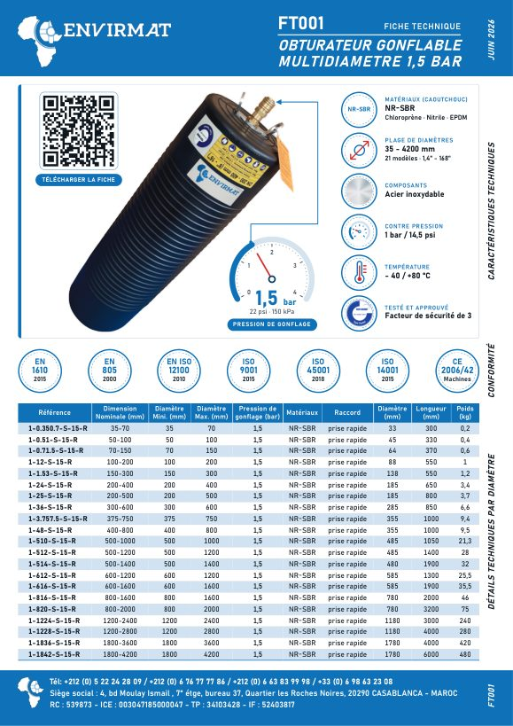
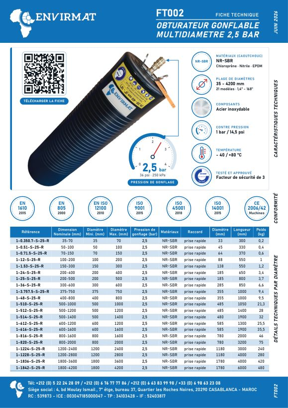
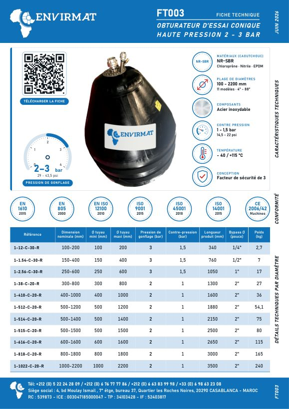
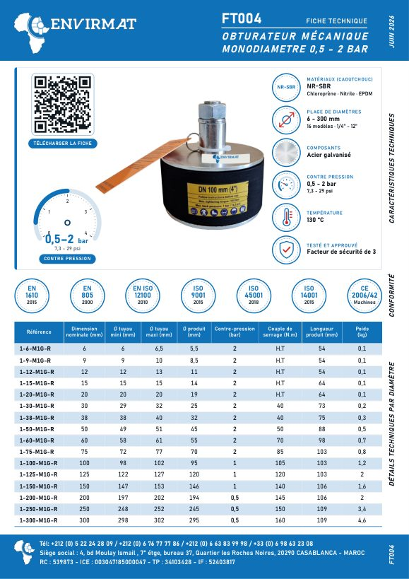
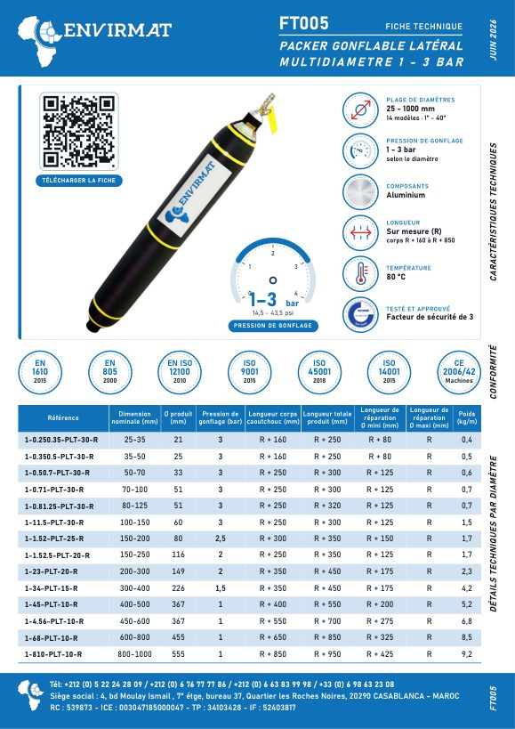

FT001 · OBTURATION
Obturateur gonflable multidiamètre 1,5 bar
Gamme d’obturateurs gonflables, de la petite canalisation au grand collecteur.
Télécharger la fiche (PDF)
FT002 · OBTURATION
Obturateur gonflable multidiamètre 2,5 bar
Version haute pression de la gamme gonflable multidiamètre.
Télécharger la fiche (PDF)
FT003 · OBTURATION
Obturateur d’essai conique haute pression 2 – 3 bar
Obturateur conique d’essai pour tests d’étanchéité des réseaux.
Télécharger la fiche (PDF)
FT004 · OBTURATION
Obturateur mécanique monodiamètre 0,5 – 2 bar
Obturateur mécanique de 6 à 300 mm, mise en œuvre rapide.
Télécharger la fiche (PDF)
FT005 · RÉPARATION
Packer gonflable latéral multidiamètre 1 – 3 bar
Packer de réparation de 25 à 1 000 mm, pour réparer de l’intérieur.
Télécharger la fiche (PDF)